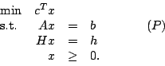
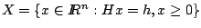
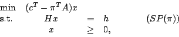
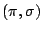
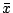
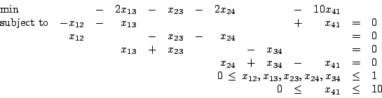
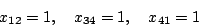
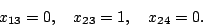
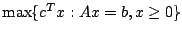

Due: Thursday, March 18, 2004.
Dantzig-Wolfe decomposition solves the linear programming problem

The procedure
takes
,
and solves subproblems of the form

where 
is the current dual solution to the Master Problem.
- 1.
- When using Dantzig-Wolfe decomposition,
assume the current subproblem has an optimal solution 
with value
v. Can you give a lower bound on the optimal value of (P)?
What does your lower bound become if
is dual feasible?
- 2.
- Suppose (P) has been solved using Dantzig-Wolfe decomposition.
How would you find
the optimal dual solution to the original problem (P)?
- 3.
- Assume there are no constraints of the form Hx=h.
What are the extreme point(s) and extreme ray(s) of X?
What is the Master Problem?
How does Dantzig-Wolfe decomposition compare with the simplex algorithm?
- 4.
- Use the network simplex algorithm to find the minimum cost flow for the problem
with
the following linear programming representation:

Use the initial basic feasible solution with basic variables:

and nonbasic variables

You should need three iterations.
- 5.
- (20 points)
In this link
you'll find an algorithm
taken from a paper that was published in SIAM Review.
It gives a Phase I procedure for finding an initial basic feasible solution
for the linear program
,
where
A is a m x n matrix.
The procedure is a greedy approach which builds up the basic feasible
solution from scratch, assigning a basic variable to each row.
The ``If not'' on the last line of Step 3a is in answer to the second
line of Step 3.
The author declares elsewhere that the number of iterations to get an
initial basic feasible solution with this algorithm is at most m.
Show that if this was true then a pivot algorithm could be designed
which would solve the linear program in at most O(m+n) pivots.
Construct a feasible linear program which this algorithm
declares infeasible.
(Such an example exists with 2 constraints and 4 variables.)
John E. Mitchell
2004-02-20